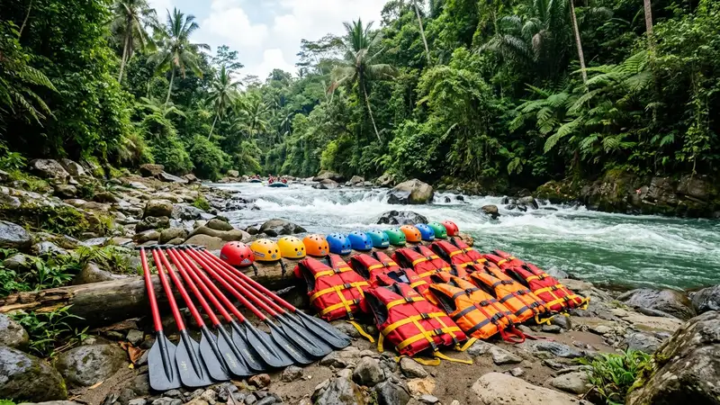

Memilih operator arung jeram Batu Malang yang aman dapat dilakukan dengan memperhatikan standar keselamatan, pengalaman pemandu, kelengkapan alat, serta ulasan dari wisatawan sebelumnya.
- Operator arung jeram yang aman umumnya memiliki standar keselamatan yang jelas dan konsisten.
- Pengalaman dan sertifikasi pemandu menjadi indikator penting kualitas layanan.
- Kelengkapan dan kondisi perlengkapan keselamatan perlu diperiksa sebelum memesan.
- Ulasan dan rekomendasi wisatawan sebelumnya dapat membantu menilai kredibilitas operator.
- Mewaspadai operator dengan harga terlalu murah tanpa kejelasan standar keselamatan.
Apa Saja Kriteria Operator Arung Jeram yang Aman?
Kriteria operator arung jeram yang aman meliputi kejelasan prosedur keselamatan, kelengkapan alat, serta pengalaman pemandu dalam menangani berbagai kondisi sungai.
Operator yang menerapkan standar keselamatan dengan baik umumnya memiliki prosedur briefing yang jelas sebelum aktivitas dimulai, termasuk penjelasan mengenai teknik dasar mendayung, cara bersikap saat perahu terguling, serta prosedur darurat lainnya.
Selain itu, operator yang kredibel biasanya juga memiliki sistem pengecekan kondisi fisik peserta sebelum memperbolehkan mengikuti aktivitas, sebagai bagian dari upaya menjaga keselamatan bersama.
Bagaimana Cara Mengecek Standar Keselamatan Operator?
Cara mengecek standar keselamatan operator arung jeram adalah dengan menanyakan langsung mengenai prosedur briefing, kondisi alat, serta pengalaman pemandu sebelum memutuskan memesan.
Beberapa hal yang dapat ditanyakan atau diperhatikan:
- Menanyakan apakah pemandu memiliki pengalaman atau pelatihan khusus di bidang arung jeram.
- Memeriksa kondisi fisik pelampung, helm, dan perahu yang akan digunakan.
- Menanyakan prosedur yang diterapkan apabila terjadi situasi darurat di sungai.
- Menanyakan rasio jumlah pemandu dibandingkan jumlah peserta dalam satu kelompok.
Operator yang terbuka menjawab pertanyaan-pertanyaan tersebut secara jelas umumnya menunjukkan komitmen yang baik terhadap keselamatan peserta.
Apa Ciri Operator Arung Jeram yang Perlu Diwaspadai?
Ciri operator arung jeram yang perlu diwaspadai antara lain kurangnya kejelasan mengenai prosedur keselamatan, kondisi alat yang tampak kurang terawat, serta harga yang jauh lebih murah tanpa alasan yang jelas.
Wisatawan sebaiknya berhati-hati apabila operator tidak memberikan sesi briefing keselamatan sama sekali, tidak menyediakan perlengkapan standar seperti pelampung dan helm, atau enggan menjelaskan pengalaman pemandu yang akan mendampingi selama aktivitas.
Harga yang jauh di bawah rata-rata pasar tanpa penjelasan yang masuk akal juga sebaiknya menjadi perhatian, karena hal ini dapat mengindikasikan adanya pengurangan standar keselamatan atau kualitas perlengkapan yang digunakan.
Bagaimana Peran Ulasan Wisatawan dalam Memilih Operator?
Ulasan wisatawan sebelumnya dapat membantu memberikan gambaran nyata mengenai kualitas layanan, standar keselamatan, dan pengalaman keseluruhan yang ditawarkan oleh suatu operator arung jeram.
Membaca ulasan dari berbagai sumber dapat membantu calon peserta memahami hal-hal yang mungkin tidak tercantum dalam deskripsi paket, seperti keramahan pemandu, ketepatan waktu pelaksanaan, hingga kondisi perlengkapan yang sebenarnya digunakan di lapangan.
Selain itu, ulasan yang konsisten positif dari berbagai periode waktu dapat menjadi indikator bahwa operator tersebut secara umum mampu menjaga kualitas layanan secara berkelanjutan, bukan hanya pada momen tertentu saja.
FAQ
Apakah penting memilih operator dengan izin resmi?
Memilih operator dengan izin operasional yang jelas umumnya lebih disarankan karena berkaitan dengan standar keselamatan dan pertanggungjawaban layanan.
Bagaimana cara mengetahui pengalaman pemandu arung jeram?
Calon peserta dapat menanyakan langsung kepada operator mengenai latar belakang pelatihan dan lama pengalaman pemandu yang akan bertugas.
Apakah harga murah selalu menandakan kualitas rendah?
Harga murah tidak selalu menandakan kualitas rendah, namun tetap perlu diimbangi dengan kejelasan standar keselamatan dan kelengkapan alat yang digunakan.
Arya
penulis artikel yang sudah berpengalaman di dalam dunia wisata outbound Batu Malang.